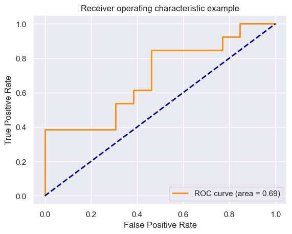
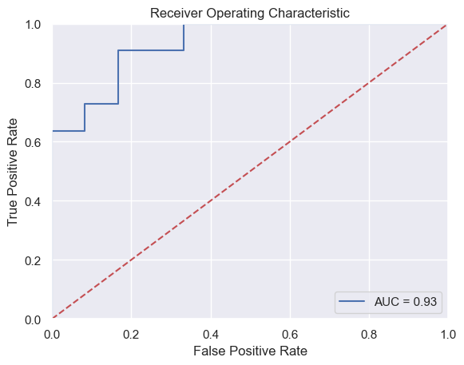
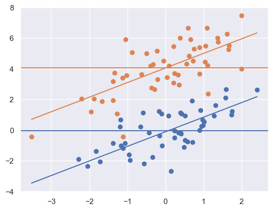
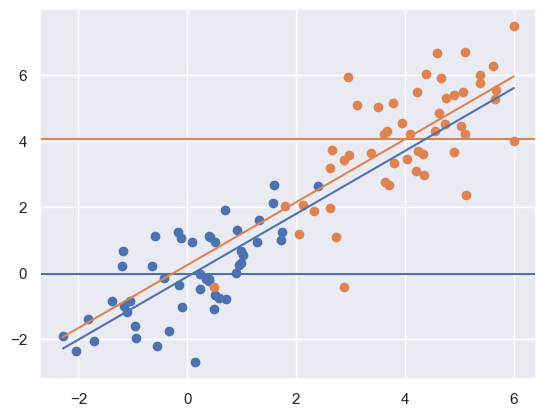
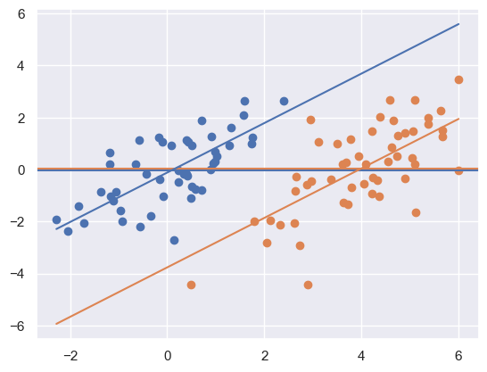
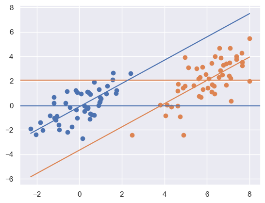
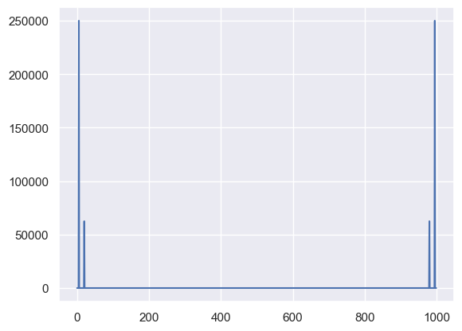
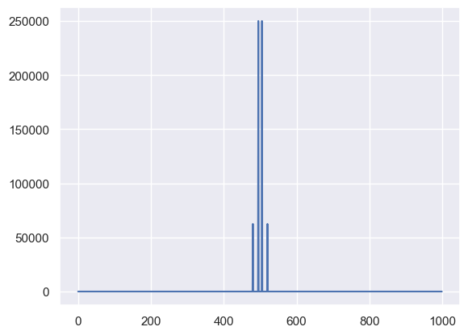
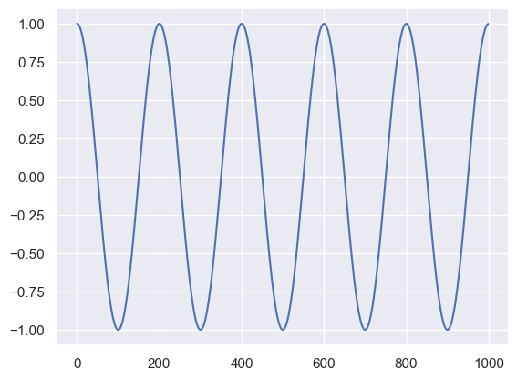

content#
i
have
not
yet
but \(\cdots\)
import numpy as np
import pandas as pd
import seaborn as sns
import matplotlib.pyplot as plt
import sklearn.linear_model as lm
import sklearn as skl
import requests
import io
import warnings
import statsmodels.formula.api as smf
import statsmodels as sm
## didn't have statsmodels installed
# pip install statsmodels in terminal
## this sets some style parameters
sns.set()
## vscode ide demands these, jupyter lab not
url = "https://raw.githubusercontent.com/bcaffo/ds4bme_intro/master/data/oasis.csv"
content = requests.get(url).content.decode("utf-8")
warnings.filterwarnings('ignore') #another vscode thing
## Read in the data and display a few rows
dat = pd.read_csv(io.StringIO(content))
dat
| FLAIR | PD | T1 | T2 | FLAIR_10 | PD_10 | T1_10 | T2_10 | FLAIR_20 | PD_20 | T1_20 | T2_20 | GOLD_Lesions | |
|---|---|---|---|---|---|---|---|---|---|---|---|---|---|
| 0 | 1.143692 | 1.586219 | -0.799859 | 1.634467 | 0.437568 | 0.823800 | -0.002059 | 0.573663 | 0.279832 | 0.548341 | 0.219136 | 0.298662 | 0 |
| 1 | 1.652552 | 1.766672 | -1.250992 | 0.921230 | 0.663037 | 0.880250 | -0.422060 | 0.542597 | 0.422182 | 0.549711 | 0.061573 | 0.280972 | 0 |
| 2 | 1.036099 | 0.262042 | -0.858565 | -0.058211 | -0.044280 | -0.308569 | 0.014766 | -0.256075 | -0.136532 | -0.350905 | 0.020673 | -0.259914 | 0 |
| 3 | 1.037692 | 0.011104 | -1.228796 | -0.470222 | -0.013971 | -0.000498 | -0.395575 | -0.221900 | 0.000807 | -0.003085 | -0.193249 | -0.139284 | 0 |
| 4 | 1.580589 | 1.730152 | -0.860949 | 1.245609 | 0.617957 | 0.866352 | -0.099919 | 0.384261 | 0.391133 | 0.608826 | 0.071648 | 0.340601 | 0 |
| ... | ... | ... | ... | ... | ... | ... | ... | ... | ... | ... | ... | ... | ... |
| 95 | 3.873210 | 0.539509 | 1.075184 | 0.741517 | 0.490891 | -0.072004 | 0.490218 | -0.202590 | 0.209201 | -0.077513 | 0.209763 | -0.102731 | 1 |
| 96 | 1.497552 | -0.323060 | 0.751151 | -0.151303 | 0.091900 | -0.482855 | 0.296390 | -0.255905 | -0.023249 | -0.339573 | 0.115855 | -0.151665 | 1 |
| 97 | 1.634460 | -0.240130 | 1.530142 | -0.817861 | 0.195918 | 0.268417 | 0.378934 | 0.050704 | 0.018602 | 0.165713 | 0.246406 | 0.073374 | 1 |
| 98 | 1.484775 | 0.567067 | -0.353472 | 0.542373 | -0.005206 | -0.063825 | 0.136869 | -0.120705 | 0.015719 | 0.093438 | 0.010343 | -0.006837 | 1 |
| 99 | 1.748226 | 0.633330 | 0.583970 | 0.750313 | 0.503704 | 0.030620 | 0.418390 | 0.173066 | 0.081150 | -0.096228 | 0.195650 | 0.026891 | 1 |
100 rows × 13 columns
## Plot the data
sns.scatterplot(x='FLAIR', y='GOLD_Lesions', data = dat) #vscode
#sns.scatterplot('FLAIR', 'GOLD_Lesions', data = dat) #jupyterlab
<Axes: xlabel='FLAIR', ylabel='GOLD_Lesions'>
x = dat[['FLAIR']]
y = dat.GOLD_Lesions
trainFraction = .75
## Once again hold out some data
sample = np.random.uniform(size = 100) < trainFraction
xtrain = x[ sample]
ytrain = y[ sample]
xtest = x[~sample]
ytest = y[~sample]
lr = lm.LogisticRegression(fit_intercept=True, penalty='none')
fit = lr.fit(xtrain, ytrain)
beta0, beta1 = [fit.intercept_[0], fit.coef_[0][0]]
[beta0, beta1]
[-3.6901407431043736, 2.3236534424749173]
n = 1000
xplot = np.linspace(-1, 5, n)
eta = beta0 + beta1 * xplot
p = 1 / (1 + np.exp(-eta))
sns.scatterplot(x='FLAIR', y='GOLD_Lesions', data = dat, hue = 'GOLD_Lesions')
sns.lineplot(x=xplot, y=p)
## Of course, scikit has a predict
## function so that you don't have to do this manually
#yplot = fit.predict_proba(xplot.reshape((n, 1)))
#sns.lineplot(xplot, yplot[:, 1])
<Axes: xlabel='FLAIR', ylabel='GOLD_Lesions'>
## This predicts the classes using a 50% probability cutoff
yhat_test = fit.predict(xtest)
## double checking that if you want
#all(yhat_test == (fit.predict_proba(xtest)[:, 1] > .5))
accuracy = np.mean(yhat_test == ytest)
sensitivity = np.mean(yhat_test[ytest == 1] == ytest[ytest == 1])
specificity = np.mean(yhat_test[ytest == 0] == ytest[ytest == 0])
np.round([accuracy, sensitivity, specificity], 3)
array([0.615, 0.615, 0.615])
from sklearn.metrics import accuracy_score, roc_curve, auc
ptest = fit.predict_proba(xtest)[:, 1]
fpr, tpr, thresholds = roc_curve(ytest, ptest)
roc_auc = auc(fpr, tpr)
plt.figure()
lw = 2
plt.plot(fpr, tpr, color='darkorange',
lw=lw, label='ROC curve (area = %0.2f)' % roc_auc)
plt.plot([0, 1], [0, 1], color='navy', lw=lw, linestyle='--')
plt.xlim([-0.05, 1.05])
plt.ylim([-0.05, 1.05])
plt.xlabel('False Positive Rate')
plt.ylabel('True Positive Rate')
plt.title('Receiver operating characteristic example')
plt.legend(loc="lower right")
plt.show()

## this sets some style parameters
sns.set()
## Read in the data
url = "https://raw.githubusercontent.com/bcaffo/ds4bme_intro/master/data/oasis.csv"
content = requests.get(url).content.decode('utf-8')
dat = pd.read_csv(io.StringIO(content))
dat
| FLAIR | PD | T1 | T2 | FLAIR_10 | PD_10 | T1_10 | T2_10 | FLAIR_20 | PD_20 | T1_20 | T2_20 | GOLD_Lesions | |
|---|---|---|---|---|---|---|---|---|---|---|---|---|---|
| 0 | 1.143692 | 1.586219 | -0.799859 | 1.634467 | 0.437568 | 0.823800 | -0.002059 | 0.573663 | 0.279832 | 0.548341 | 0.219136 | 0.298662 | 0 |
| 1 | 1.652552 | 1.766672 | -1.250992 | 0.921230 | 0.663037 | 0.880250 | -0.422060 | 0.542597 | 0.422182 | 0.549711 | 0.061573 | 0.280972 | 0 |
| 2 | 1.036099 | 0.262042 | -0.858565 | -0.058211 | -0.044280 | -0.308569 | 0.014766 | -0.256075 | -0.136532 | -0.350905 | 0.020673 | -0.259914 | 0 |
| 3 | 1.037692 | 0.011104 | -1.228796 | -0.470222 | -0.013971 | -0.000498 | -0.395575 | -0.221900 | 0.000807 | -0.003085 | -0.193249 | -0.139284 | 0 |
| 4 | 1.580589 | 1.730152 | -0.860949 | 1.245609 | 0.617957 | 0.866352 | -0.099919 | 0.384261 | 0.391133 | 0.608826 | 0.071648 | 0.340601 | 0 |
| ... | ... | ... | ... | ... | ... | ... | ... | ... | ... | ... | ... | ... | ... |
| 95 | 3.873210 | 0.539509 | 1.075184 | 0.741517 | 0.490891 | -0.072004 | 0.490218 | -0.202590 | 0.209201 | -0.077513 | 0.209763 | -0.102731 | 1 |
| 96 | 1.497552 | -0.323060 | 0.751151 | -0.151303 | 0.091900 | -0.482855 | 0.296390 | -0.255905 | -0.023249 | -0.339573 | 0.115855 | -0.151665 | 1 |
| 97 | 1.634460 | -0.240130 | 1.530142 | -0.817861 | 0.195918 | 0.268417 | 0.378934 | 0.050704 | 0.018602 | 0.165713 | 0.246406 | 0.073374 | 1 |
| 98 | 1.484775 | 0.567067 | -0.353472 | 0.542373 | -0.005206 | -0.063825 | 0.136869 | -0.120705 | 0.015719 | 0.093438 | 0.010343 | -0.006837 | 1 |
| 99 | 1.748226 | 0.633330 | 0.583970 | 0.750313 | 0.503704 | 0.030620 | 0.418390 | 0.173066 | 0.081150 | -0.096228 | 0.195650 | 0.026891 | 1 |
100 rows × 13 columns
trainFraction = .75
sample = np.random.uniform(size = 100) < trainFraction
trainingDat = dat[sample]
testingDat = dat[~sample]
results = smf.ols('PD ~ FLAIR + T1 + T2 + FLAIR_10 + T1_10 + T2_10 + FLAIR_20', data = trainingDat).fit()
print(results.summary2())
Results: Ordinary least squares
=================================================================
Model: OLS Adj. R-squared: 0.731
Dependent Variable: PD AIC: 67.3386
Date: 2023-05-14 21:48 BIC: 86.0890
No. Observations: 77 Log-Likelihood: -25.669
Df Model: 7 F-statistic: 30.50
Df Residuals: 69 Prob (F-statistic): 9.14e-19
R-squared: 0.756 Scale: 0.12727
------------------------------------------------------------------
Coef. Std.Err. t P>|t| [0.025 0.975]
------------------------------------------------------------------
Intercept 0.2135 0.1353 1.5776 0.1192 -0.0565 0.4835
FLAIR -0.0115 0.0864 -0.1330 0.8946 -0.1839 0.1609
T1 -0.1932 0.0851 -2.2714 0.0262 -0.3629 -0.0235
T2 0.6006 0.0870 6.9001 0.0000 0.4269 0.7742
FLAIR_10 -0.1179 0.3173 -0.3716 0.7114 -0.7509 0.5151
T1_10 0.2591 0.1550 1.6718 0.0991 -0.0501 0.5684
T2_10 0.2108 0.2978 0.7077 0.4815 -0.3834 0.8050
FLAIR_20 1.4177 0.7052 2.0104 0.0483 0.0109 2.8245
-----------------------------------------------------------------
Omnibus: 4.846 Durbin-Watson: 2.104
Prob(Omnibus): 0.089 Jarque-Bera (JB): 4.221
Skew: -0.413 Prob(JB): 0.121
Kurtosis: 3.796 Condition No.: 40
=================================================================
Notes:
[1] Standard Errors assume that the covariance matrix of the
errors is correctly specified.
x = dat[['FLAIR','T1', 'T2', 'FLAIR_10', 'T1_10', 'T2_10', 'FLAIR_20']]
y = dat[['GOLD_Lesions']]
## Add the intercept column
x = sm.tools.add_constant(x)
xtraining = x[sample]
xtesting = x[~sample]
ytraining = y[sample]
ytesting = y[~sample]
fit = sm.discrete.discrete_model.Logit(ytraining, xtraining).fit()
Optimization terminated successfully.
Current function value: 0.212742
Iterations 9
fit.summary()
| Dep. Variable: | GOLD_Lesions | No. Observations: | 77 |
|---|---|---|---|
| Model: | Logit | Df Residuals: | 69 |
| Method: | MLE | Df Model: | 7 |
| Date: | Sun, 14 May 2023 | Pseudo R-squ.: | 0.6930 |
| Time: | 21:48:59 | Log-Likelihood: | -16.381 |
| converged: | True | LL-Null: | -53.366 |
| Covariance Type: | nonrobust | LLR p-value: | 2.321e-13 |
| coef | std err | z | P>|z| | [0.025 | 0.975] | |
|---|---|---|---|---|---|---|
| const | -4.8475 | 1.943 | -2.494 | 0.013 | -8.656 | -1.039 |
| FLAIR | 2.3827 | 1.249 | 1.908 | 0.056 | -0.066 | 4.831 |
| T1 | 3.3436 | 1.311 | 2.550 | 0.011 | 0.774 | 5.913 |
| T2 | 2.6150 | 1.347 | 1.942 | 0.052 | -0.024 | 5.254 |
| FLAIR_10 | 10.4060 | 4.365 | 2.384 | 0.017 | 1.851 | 18.961 |
| T1_10 | 0.5536 | 1.844 | 0.300 | 0.764 | -3.060 | 4.167 |
| T2_10 | -5.8979 | 3.722 | -1.584 | 0.113 | -13.194 | 1.398 |
| FLAIR_20 | -25.5693 | 10.257 | -2.493 | 0.013 | -45.673 | -5.466 |
phatTesting = fit.predict(xtesting)
## See here for plotting
## https://stackoverflow.com/questions/25009284/how-to-plot-roc-curve-in-python
fpr, tpr, threshold = skl.metrics.roc_curve(ytesting, phatTesting)
roc_auc = skl.metrics.auc(fpr, tpr)
# method I: plt
import matplotlib.pyplot as plt
plt.title('Receiver Operating Characteristic')
plt.plot(fpr, tpr, 'b', label = 'AUC = %0.2f' % roc_auc)
plt.legend(loc = 'lower right')
plt.plot([0, 1], [0, 1],'r--')
plt.xlim([0, 1])
plt.ylim([0, 1])
plt.ylabel('True Positive Rate')
plt.xlabel('False Positive Rate')
plt.show()

results = smf.logit(formula = 'GOLD_Lesions ~ FLAIR + T1 + T2 + FLAIR_10 + T1_10 + T2_10 + FLAIR_20', data = trainingDat).fit()
results.summary()
Optimization terminated successfully.
Current function value: 0.212742
Iterations 9
| Dep. Variable: | GOLD_Lesions | No. Observations: | 77 |
|---|---|---|---|
| Model: | Logit | Df Residuals: | 69 |
| Method: | MLE | Df Model: | 7 |
| Date: | Sun, 14 May 2023 | Pseudo R-squ.: | 0.6930 |
| Time: | 21:49:00 | Log-Likelihood: | -16.381 |
| converged: | True | LL-Null: | -53.366 |
| Covariance Type: | nonrobust | LLR p-value: | 2.321e-13 |
| coef | std err | z | P>|z| | [0.025 | 0.975] | |
|---|---|---|---|---|---|---|
| Intercept | -4.8475 | 1.943 | -2.494 | 0.013 | -8.656 | -1.039 |
| FLAIR | 2.3827 | 1.249 | 1.908 | 0.056 | -0.066 | 4.831 |
| T1 | 3.3436 | 1.311 | 2.550 | 0.011 | 0.774 | 5.913 |
| T2 | 2.6150 | 1.347 | 1.942 | 0.052 | -0.024 | 5.254 |
| FLAIR_10 | 10.4060 | 4.365 | 2.384 | 0.017 | 1.851 | 18.961 |
| T1_10 | 0.5536 | 1.844 | 0.300 | 0.764 | -3.060 | 4.167 |
| T2_10 | -5.8979 | 3.722 | -1.584 | 0.113 | -13.194 | 1.398 |
| FLAIR_20 | -25.5693 | 10.257 | -2.493 | 0.013 | -45.673 | -5.466 |
results = smf.ols('PD ~ FLAIR + T1 + T2 + FLAIR_10 + T1_10 + T2_10 + FLAIR_20', data = dat).fit()
print(results.summary2())
Results: Ordinary least squares
=================================================================
Model: OLS Adj. R-squared: 0.743
Dependent Variable: PD AIC: 95.4183
Date: 2023-05-14 21:49 BIC: 116.2597
No. Observations: 100 Log-Likelihood: -39.709
Df Model: 7 F-statistic: 41.98
Df Residuals: 92 Prob (F-statistic): 5.56e-26
R-squared: 0.762 Scale: 0.14081
------------------------------------------------------------------
Coef. Std.Err. t P>|t| [0.025 0.975]
------------------------------------------------------------------
Intercept 0.2349 0.1231 1.9086 0.0594 -0.0095 0.4794
FLAIR -0.0160 0.0761 -0.2107 0.8336 -0.1671 0.1351
T1 -0.2116 0.0777 -2.7251 0.0077 -0.3659 -0.0574
T2 0.6078 0.0747 8.1323 0.0000 0.4593 0.7562
FLAIR_10 -0.2581 0.3078 -0.8386 0.4039 -0.8693 0.3532
T1_10 0.2212 0.1494 1.4810 0.1420 -0.0755 0.5179
T2_10 0.1103 0.2642 0.4177 0.6771 -0.4143 0.6350
FLAIR_20 1.8072 0.6423 2.8136 0.0060 0.5315 3.0828
-----------------------------------------------------------------
Omnibus: 2.142 Durbin-Watson: 2.187
Prob(Omnibus): 0.343 Jarque-Bera (JB): 1.725
Skew: -0.075 Prob(JB): 0.422
Kurtosis: 3.626 Condition No.: 40
=================================================================
Notes:
[1] Standard Errors assume that the covariance matrix of the
errors is correctly specified.
# Model for PD with FLAIR removed
dat['PD_adjusted'] = smf.ols('PD ~ T1 + T2 + FLAIR_10 + T1_10 + T2_10 + FLAIR_20', data = dat).fit().resid
# Model for FLAIR
dat['FLAIR_adjusted'] = smf.ols('FLAIR ~ T1 + T2 + FLAIR_10 + T1_10 + T2_10 + FLAIR_20', data = dat).fit().resid
out = smf.ols('PD_adjusted ~ FLAIR_adjusted', data = dat).fit()
print(out.summary2())
Results: Ordinary least squares
================================================================
Model: OLS Adj. R-squared: -0.010
Dependent Variable: PD_adjusted AIC: 83.4183
Date: 2023-05-14 21:49 BIC: 88.6286
No. Observations: 100 Log-Likelihood: -39.709
Df Model: 1 F-statistic: 0.04730
Df Residuals: 98 Prob (F-statistic): 0.828
R-squared: 0.000 Scale: 0.13219
----------------------------------------------------------------
Coef. Std.Err. t P>|t| [0.025 0.975]
----------------------------------------------------------------
Intercept -0.0000 0.0364 -0.0000 1.0000 -0.0722 0.0722
FLAIR_adjusted -0.0160 0.0737 -0.2175 0.8283 -0.1623 0.1303
----------------------------------------------------------------
Omnibus: 2.142 Durbin-Watson: 2.187
Prob(Omnibus): 0.343 Jarque-Bera (JB): 1.725
Skew: -0.075 Prob(JB): 0.422
Kurtosis: 3.626 Condition No.: 2
================================================================
Notes:
[1] Standard Errors assume that the covariance matrix of the
errors is correctly specified.
import pandas as pd
import numpy as np
from sklearn.linear_model import LinearRegression
import matplotlib.pyplot as plt
url = "https://raw.githubusercontent.com/bcaffo/ds4bme_intro/master/data/swiss.csv"
content = requests.get(url).content.decode('utf-8')
dat = pd.read_csv(io.StringIO(content))
dat.head()
| Region | Fertility | Agriculture | Examination | Education | Catholic | Infant.Mortality | |
|---|---|---|---|---|---|---|---|
| 0 | Courtelary | 80.2 | 17.0 | 15 | 12 | 9.96 | 22.2 |
| 1 | Delemont | 83.1 | 45.1 | 6 | 9 | 84.84 | 22.2 |
| 2 | Franches-Mnt | 92.5 | 39.7 | 5 | 5 | 93.40 | 20.2 |
| 3 | Moutier | 85.8 | 36.5 | 12 | 7 | 33.77 | 20.3 |
| 4 | Neuveville | 76.9 | 43.5 | 17 | 15 | 5.16 | 20.6 |
y = dat.Fertility
x = dat.drop(['Region', 'Fertility'], axis=1)
fit = LinearRegression().fit(x, y)
yhat = fit.predict(x)
[fit.intercept_, fit.coef_]
[66.91518167896871,
array([-0.17211397, -0.25800824, -0.87094006, 0.10411533, 1.07704814])]
x2 = x
x2['Test'] = x2.Agriculture + x2.Examination
fit2 = LinearRegression().fit(x2, y)
yhat2 = fit2.predict(x2)
plt.plot(yhat, yhat2)
[<matplotlib.lines.Line2D at 0x14dada310>]
x3 = x2.drop(['Agriculture'], axis = 1)
fit3 = LinearRegression().fit(x3, y)
yhat3 = fit3.predict(x3)
plt.plot(yhat, yhat3)
[<matplotlib.lines.Line2D at 0x14db25290>]
import copy
def myplot(x, y, t):
x1 = x[t == 1]
x0 = x[t == 0]
y1 = y[t == 1]
y0 = y[t == 0]
xm1 = np.mean(x1)
xm0 = np.mean(x0)
ym1 = np.mean(y1)
ym0 = np.mean(y0)
X = np.array([x, t]).transpose()
out = LinearRegression().fit(X, y)
b0hat = out.intercept_
b1hat = out.coef_[0]
b2hat = out.coef_[1]
plt.scatter(x0, y0)
plt.scatter(x1, y1)
col = sns.color_palette()
plt.axhline(y = ym0, c = col[0])
plt.axhline(y = ym1, c = col[1])
xlim = [np.min(x), np.max(x)]
ylim0 = [z * b1hat + b0hat + b2hat for z in xlim]
ylim1 = [z * b1hat + b0hat for z in xlim]
plt.plot( xlim, ylim1)
plt.plot( xlim, ylim0)
plt.show()
n = 100
x = np.random.normal(size = n)
e = np.random.normal(size = n)
t = np.random.binomial(1, .5, n)
beta0 = 0
beta1 = 1
beta2 = 4
y = beta0 + beta1 * x + beta2 * t + e
myplot(x, y, t)

myplot(x + t * 4, y, t)

myplot(x + t * 4, y - t * 4, t)

myplot(x + t * 6, y - t * 2, t)

import numpy as np
import matplotlib.pyplot as plt
x = np.arange(1,5,1) ** 2
t = np.arange(0, 4, 1)
n = 4
F0 = np.sum(x * np.exp(-2 * 1j * np.pi * t * 0 / n))
F1 = np.sum(x * np.exp(-2 * 1j * np.pi * t * 1 / n))
F2 = np.sum(x * np.exp(-2 * 1j * np.pi * t * 2 / n))
F3 = np.sum(x * np.exp(-2 * 1j * np.pi * t * 3 / n))
np.round([F0, F1, F2, F3], 3)
array([ 30. +0.j, -8.+12.j, -10. -0.j, -8.-12.j])
F = np.fft.fft(x)
F
array([ 30. +0.j, -8.+12.j, -10. +0.j, -8.-12.j])
n = 1000
t = np.arange(0, n, 1)
c1 = np.cos(2 * np.pi * t * 5 / n)
c2 = np.cos(2 * np.pi * t * 20 / n)
plt.plot(t, c1)
plt.plot(t, c2)
plt.show
<function matplotlib.pyplot.show(close=None, block=None)>
x = c1 + .5 * c2
plt.plot(t, x)
plt.show
<function matplotlib.pyplot.show(close=None, block=None)>
a = np.fft.fft(x)
b = a.real ** 2 + a.imag ** 2
plt.plot(b)
plt.show()
np.where(b > 1e-5)

(array([ 5, 20, 980, 995]),)
## Plotting the spectrum so that it's in the middle
a = np.fft.fft(x * (-1) ** t)
b = a.real ** 2 + a.imag ** 2
plt.plot(b)
plt.show()

## demonstrating going backwards
a = np.fft.fft(x)
b = np.fft.ifft(a)
plt.plot(b)
plt.show()
## demonstrating hard filtering
a = np.fft.fft(x)
n = a.size
timestep = 1/100
## a function that shows what the frequencies are in the units you want
w = np.fft.fftfreq(n, timestep)
b = a
b[(abs(w) > .5)] = 0
c = np.fft.ifft(b).real
plt.plot(c)
plt.show()

url1 = 'https://raw.githubusercontent.com/CSSEGISandData/COVID-19/master/'
url2 = 'csse_covid_19_data/csse_covid_19_time_series/'
url3 = 'time_series_covid19_confirmed_global.csv'
url4 = url1 + url2 + url3
dat = pd.read_csv(io.StringIO(requests.get(url4).content.decode('utf-8')))
dat.head()
| Province/State | Country/Region | Lat | Long | 1/22/20 | 1/23/20 | 1/24/20 | 1/25/20 | 1/26/20 | 1/27/20 | ... | 2/28/23 | 3/1/23 | 3/2/23 | 3/3/23 | 3/4/23 | 3/5/23 | 3/6/23 | 3/7/23 | 3/8/23 | 3/9/23 | |
|---|---|---|---|---|---|---|---|---|---|---|---|---|---|---|---|---|---|---|---|---|---|
| 0 | NaN | Afghanistan | 33.93911 | 67.709953 | 0 | 0 | 0 | 0 | 0 | 0 | ... | 209322 | 209340 | 209358 | 209362 | 209369 | 209390 | 209406 | 209436 | 209451 | 209451 |
| 1 | NaN | Albania | 41.15330 | 20.168300 | 0 | 0 | 0 | 0 | 0 | 0 | ... | 334391 | 334408 | 334408 | 334427 | 334427 | 334427 | 334427 | 334427 | 334443 | 334457 |
| 2 | NaN | Algeria | 28.03390 | 1.659600 | 0 | 0 | 0 | 0 | 0 | 0 | ... | 271441 | 271448 | 271463 | 271469 | 271469 | 271477 | 271477 | 271490 | 271494 | 271496 |
| 3 | NaN | Andorra | 42.50630 | 1.521800 | 0 | 0 | 0 | 0 | 0 | 0 | ... | 47866 | 47875 | 47875 | 47875 | 47875 | 47875 | 47875 | 47875 | 47890 | 47890 |
| 4 | NaN | Angola | -11.20270 | 17.873900 | 0 | 0 | 0 | 0 | 0 | 0 | ... | 105255 | 105277 | 105277 | 105277 | 105277 | 105277 | 105277 | 105277 | 105288 | 105288 |
5 rows × 1147 columns